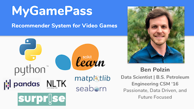

Welcome to my portfolio and thank you very much for your interest! I am a former Petroleum Engineer turned Data Scientist with a passion for problem solving and innovation. I graduated from Colorado School of Mines with a B.S. in Petroleum Engineering in May 2016 in the midst of a severe downturn in the industry. One of only 18 others in my graudating class of 200+ to be hired that year, I was lucky to have the opportunity to grow and learn in such a tough environment. Adaptability, collaboration, and innovation became my foundation as I achieved success as a versatile member of the team. Within three years I had worked myself into a position of mentor to the interns and new engineers as well as cornerstone for management assisting in budget and forecasting.
After falling in love with data while working as an engineer I realized I needed to expand my toolbox to be equipped to solve the problems of tomorrow. So, I left my position and decided to pursue this dream full time. I completed my Data Science Diploma @BrainStation November 2020 and was selected at the top of my class to join the team as a Teaching Assistant to provide mentoring and leadership for the next cohort which was a great experience.
Always excited about the future and how we can shape it, I am very excited to join a great team and put these skills to use! I am passionate about Machine Learning, Python, the space industry, my favorite sports teams the Iowa Hawkeyes and Green Bay Packers, and of course Xbox. Below you can find projects demonstrating the data science foundational skillset. If interested, please feel free to connect with me on LinkedIn or send me an e-mail here. Additionally, the logos at the bottom of the page serve as links to my email, GitHub, and LinkedIn. Thanks!

Recommendation system for video games. Explored both collaborative filtering and content-based filtering by cosine similarity. Required extensive cleaning, EDA, and preprocessing as well as matrix factorization, natural language processing and machine learning.